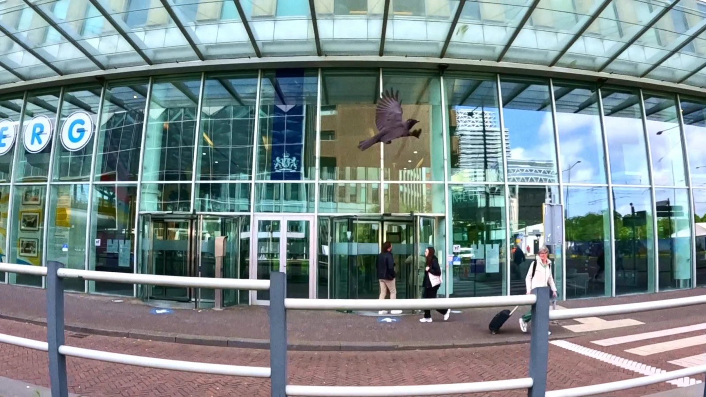
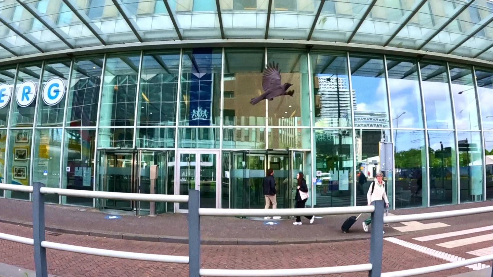

Ref:EM24472292023
Bureaucracy is seen from the perspective of the bureaucrat himself, who follows the logic of desire and deterritorialization. That is, constantly moving from one office to another, shifting from chair to chair. Like a decentralised seaweed weaving across the surface and generating many exits and escape lines. The goal is to seek ways to live and thrive by finding ‘escape lines’ to break free from the oppressive state machine—to become a rhizomorphic animal that digs its burrows and tunnels. Paradoxically, the demand for freedom is framed in forms and documents that everyone has to comply with. What should ensure freedoms and some kind of emancipation from this bureaucratisation is only possible through bureaucratisation itself, as the state has no other resources and mechanisms apart from bureaucracy—entrenching and complicating this same machine and producing more and more paperwork.
4'46"
 
